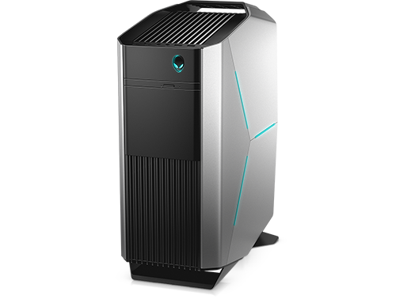
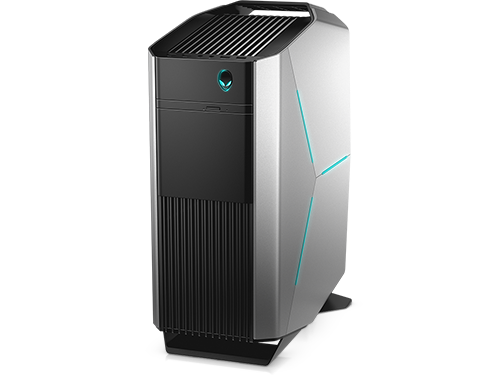

GAMING PC
Ordenagailua edo konputagailua programa informatiko bat aplikatuz datuak prozesatzeko gai den gailu elektronikoa da. Tresna digital eta elektronikoa da, bere osagaiak digitalak direlako eta erabil dezakeen informazioak diskretua edo kuantifikagarria izan behar direlako (zenbakiak, testua, irudiak, bideoa edo soinua...).
Ordenagailua helburu orokorreko makina automatikoa da, era askotako kalkulu edo eginkizunak burutu ditzake eta. Moldagarria da hainbat lanetarako. Nahi ditugun emaitzak lortuko dituen programa idazteko gauza bagara, gero konputagailuak automatikoki erabiliko du programa hori, inoren laguntzarik gabe eta nahi beste aldiz. Programa agindu-sekuentzia bat da, eta aginduak, konputagailuak ulertzen dituen eragiketa logiko edota aritmetikoak. Horregatik, konputagailua programagarria dela esaten da, eta programak egiteko moduak eta teknikak aztertzen dituen informatikaren arloari programazioa deritzo. Programak idazteko programazio-lengoaiak erabiltzen dira. Gainera, ordenagailuak agindu horiek arin-arin egingo ditu, informazio-kantitate handia erabiliz eta errorerik gabe.
Konputagailuak maneiatzeko eta diseinatzeko teknikak aztertzen dituen diziplinari informatika deritzo. Oro har, informazioaren tratamendu automatikoaren zientzia da informatika.
Ezaugarriak
- Abiadura: konputagailu guztiek kalkuluak abiadura ikaragarrian egiten dituztela esan daiteke, eskuzko kalkuluen edo makina mekanikoz baliaturiko kalkuluen abiadurarekin konparatuz gero. Baina nola neurtu konputagailu baten abiadura? Komeni da bereiztea, batetik, prozesadorearen abiadura, eta, bestetik, konputagailuaren errendimendua. Prozesadorearen abiadura GHz-etan ematen da, eta CPUaren erlojuaren maiztasuna (erloju-abiadura) adierazten du. Zenbat eta altuago izan maiztasuna, orduan eta eragiketa gehiago egingo ditu segundoko. Segundo batean mila milioi (109) eragiketa burutzeko gauza bada prozesadorea, GHz batekoa dela esaten dugu. 2008ko prozesadoreen abiadura 2,6 eta 3,5 GHz artekoa da. Konputagailuaren errendimendua neurtzeko, bestelako neurri batzuk izango ditugu kontuan. MIPS (milioi bat agindu segundoko), MFLOPS (milioi bat eragiketa zenbaki errealekin segundoko), edo proba-bankuak (programa edo programa-banku jakin bat exekutatzen da konputagailuan osagai desberdinen errendimendua neurtzeko).
- Edukiera: edukierak konputagailuan zenbat informazio gorde edo biltegiratu daitekeen adierazten du. Informazio hori konputagailuaren memoria-sisteman edo Interneten bidez konektatuta dagoen beste konputagailu batean gorde daiteke. Konputagailuan informazioa gordetzeko erabiltzen den oinarrizko unitatea bytea da. Bytea 8 bitez osatuta dago eta, oro har, karaktere bat edo zenbaki bat gordetzeko balio du. Konputagailuaren edukiera neurtzeko erabiltzen diren unitateak bytearen multiploak dira. Gaur egungo konputagailu pertsonaletan erabiltzen diren ohiko unitateak megabyteak eta gigabyteak dira. Megabyte bat (MB = 220 byte) milioi bat karaktere dira gutxi gorabehera, eta gigabyte bat (GB = 230 byte), mila milioi karaktere. Adibidez, CD batek 700 MB ditu, eta DVD batek, 4,5 GB. 2008an saldu ziren konputagailu pertsonal estandarretan, memoria nagusia 1 GB eta 2 GB artekoa izan zen, eta kanpo-memoria (disko gogorra), 160-500 GBkoa. Interneten eskura dagoena askoz gehiago da, noski; esaterako, zenbatetsi izan da, bakarrik ingelesez, bilioi bat hitz zegoela 2006an (milioi bat milioi hitz!). Kontuan hartu liburu arrunt batek 100.000 hitz inguru dauzkala, eta zenbatetsi dela pertsona ikasi batek bizitza osoan 300 milioi hitz irakurtzen dituela.
- Moldagarritasuna: konputagailuak helburu orokorreko makinak direla esan dugu. Baina konputagailu batzuk problema-mota zehatz batean espezializatuta daude, eta beste problema-mota batzuk burutzen motelagoak izango lirateke. Adibidez, egun, gero eta konputagailu txiki gehiago ditugu gure inguruan (etxean edo lantokian), konfigurazio minimo batekin helburu zehatz bakarra dutena, esate baterako, arropa-garbigailua, kamera digitalak, automobilak, robotak edo umeen jostailuak kontrolatzeko gailuak. Dena dela, konputagailu guzti horiek oinarrizko elementu berekin osatzen dira, eta erabilpen oso desberdinak dituzten konputagailuak antolatu ahal dira.
- Fidagarritasuna: kalkuluak ziztu bizian burutzen ditu ordenagailuak, baina hori bezain garrantzitsua da kalkulu horien errore-marjina eskuz egindako kalkuluena baino askoz txikiagoa dela. Konputagailuaren beste funtsezko ezaugarri bat fidagarritasuna da. Gaur egungo konputagailuak oso fidagarriak dira, hau da, oso seguruak. Horrek ez du esan nahi ez dutela okerrik egiten, baizik eta erroreren bat gertatzekotan konputagailuaren mekanismoen bidez igarri eta, askotan, zuzentzen dela. Gertatzen diren errore gehienak giza akatsen ondorioak dira (programari, datuei edo sistema eragileei dagozkienak).

 
